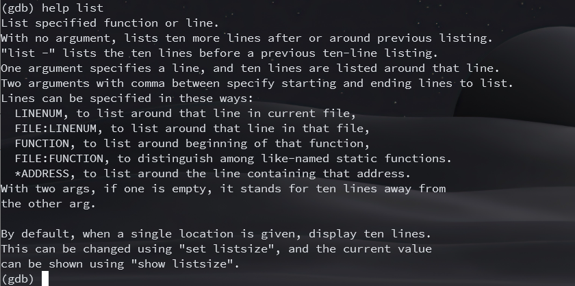

GDB 调试器
GDB 调试器
- GDB（GNU Debugger）是一个用来调试 C/C++ 程序的功能强大的调试器，是 Linux系统开发 C/C++ 最常用的调试器
- 程序员可以使用 GDB 来跟踪程序中的错误，从而减少程序员的工作量。
- Linux 开发C/C++ 一定要熟悉 GDB
- VSCode 是通过调用GDB调试器来实现 C/C++ 的调试工作的；
- Windows 系统中，常见的集成开发环境（IDE），如 VS、VC 等，它们内部已经嵌套了相应的调试器
GDB主要功能：
- 设置断点（断点可以是条件表达式）
- 使程序在指定的代码行上暂停执行，便于观察
- 单步执行程序，便于调试
- 查看程序中变量值的变化
- 动态改变程序的执行环境
- 分析崩溃程序产生的 core 文件
常用调试命令参数
调试开始：执行 gdb [exefilename]，进入 gdb 调试程序，其中 exefilename 为要调试的可执行文件名
## 以下命令后括号内为命令的简化使用，比如 run(r)，直接输入命令 r 就代表命令 run $(gdb) help(h) # 查看命令帮助，具体命令查询在gdb中输入 help + 命令 $(gdb) run(r) # 重新开始运行文件（run-text：加载文本文件，run-bin：加载二进制文件） $(gdb) start # 单步执行，运行程序，停在第一行执行语句 $(gdb) list(l) # 查看原代码（list-n，从第 n 行开始查看代码。list + 函数名：查看具体函数） $(gdb) set # 设置变量的值 $(gdb) next(n) # 单步调试（逐过程，函数直接执行） $(gdb) step(s) # 单步调试（逐语句：跳入自定义函数内部执行） $(gdb) backtrace(bt) # 查看函数的调用的栈帧和层级关系 $(gdb) frame(f) # 切换函数的栈帧 $(gdb) info(i) # 查看函数内部局部变量的数值 $(gdb) finish # 结束当前函数，返回到函数调用点 $(gdb) continue(c) # 继续运行 $(gdb) print(p) # 打印值及地址 $(gdb) quit(q) # 退出 gdb $(gdb) break+num(b) # 在第 num 行设置断点 $(gdb) info breakpoints # 查看当前设置的所有断点 $(gdb) delete breakpoints num(d) # 删除第 num 个断点 $(gdb) display # 追踪查看具体变量值 $(gdb) undisplay # 取消追踪观察变量 $(gdb) watch # 被设置观察点的变量发生修改时，打印显示 $(gdb) i watch # 显示观察点 $(gdb) enable breakpoints # 启用断点 $(gdb) disable breakpoints # 禁用断点 $(gdb) x # 查看内存 x/20xw 显示 20 个单元，16 进制，4 字节每单元 $(gdb) run argv[1] argv[2] # 调试时命令行传参 $(gdb) set follow-fork-mode child # Makefile 项目管理：选择跟踪父子进程（fork()）
Tips：
- 编译程序时需要加上 -g，之后才能用 gdb 进行调试：
gcc -g main.c -o main- 回车键：重复上一命令
GDB 命令速查
- info files
- 查看正在调试的目标和文件的名称
- info functions
- 所有函数名
- info breakpoints
- 查看断点,可以后接参数 n 表示查看某个断点号
- info args
- 打印当前函数的参数名及其值
- info locals
- 打印出当前函数中所有局部变量及其值
- break <function>
- 在进入指定函数时停住
- break <linenum>
- 在指定行号停住
- break +offset
- 在当前行号的前面的 offset 行停住
- break -offset
- 在当前行号的后面的 offset 行停住
- break filename:function
- 在指定文件的 function 函数的入口处停住
- break filename:linenum
- 在指定文件的 linenum 行停住
- break *address
- 在程序运行的内存地址处停住
- break
- break 命令没有参数时，表示在吓一条指令处停住
- break if <condition>
- 在条件成立时停住，比如：break if i=100
启动调试
前言
GDB（GNU Debugger）是 UNIX 及 UNIX-like 下的强大调试工具，可以调试 ada, c, c++, asm, minimal, d, fortran, objective-c, go, java,pascal 等语言。本文以 C 程序为例，介绍 GDB 启动调试的多种方式。
哪类程序可被调试
对于 C 程序来说，需要在编译时加上 -g 参数，保留调试信息，否则不能使用 GDB 进行调试。
但如果不是自己编译的程序，并不知道是否带有 -g 参数，如何判断一个文件是否带有调试信息呢？
gdb filename
如果没有调试信息，会提示 no debugging symbols found 。
如果是下面的提示：
则可以进行调试。
readelf 查看段信息
如果没有任何 debug 信息，则不能被调试。
调试方式运行程序
调试启动无参程序
输入 run 命令，即可运行程序。
调试启动带参程序
假设有以下程序，启动时需要带参数：
#include <stdio.h> int main(int argc, char *argv[]) { if (argc <= 1) { printf("argc <= 1"); return 0; } printf("hello world %s!\n", argv[1]); return 0; }
只需要 run 的时候带上参数即可，或者使用 set args ，然后再用 run 启动。
调试 core 文件
什么是 core 文件
core 时 unix 系统的内核，当你的程序出现内存越界的时候，操作系统会中止你的进程，并将当前内存状态倒出到 core 文件中，以便能进一步分析。
linux 系统下执行代码，如果不能正常运行，程序会 core，或者直接离开，不会 core。
bug 和操作系统或硬件的保护机制都会导致程序异常终止，操作系统会 kill 掉这些进程并产生 core 文件， 程序员可以通过 core 文件来找出问题所在，它记录了程序挂掉时详细的状态描述 。
什么是 core dump
core 的意思是内存, dump 的意思是扔出来, 堆出来.
开发和使用 Unix 程序时, 有时程序莫名其妙的 down 了, 却没有任何的提示（有时候会提示core dumped）。这时候可以查看一下有没有形如 core.进程号 的文件生成, 这个文件便是操作系统把程序 down 掉时的内存内容扔出来生成的, 它可以做为调试程序的参考。
core dump 又叫核心转储, 当程序运行过程中发生异常, 程序异常退出时, 由操作系统把程序当前的内存状况存储在一个 core 文件中, 叫 core dump。
如何使用 core 文件
使用的前提是系统没有限制 core 文件的产生，可以使用以下命令查看：
$ ulimit -c 0
如果结果是 0，即使程序 core dump 了，也不会有 core 文件留下，我们需要让 core 文件能够产生：
ulimit -c unlimied # 表示不限制 core 文件大小 ulimit -c 10 # 设置最大大小，单位为块，一块默认为 512 字节
上面两种方式可选其一，第一种无限制，第二种指定最大产生的大小。
调试 core 文件也很简单：
gdb -c core文件路径 [应用程序路径]
进入后输入 where 回车，就可以显示程序在哪一个函数、哪一行挂掉的。
调试已运行程序
attach 方式
假设获取到进程 id 为 20829，则可用下面的方式调试进程。
$ gdb (gdb) attach 20829
接下来就可以继续调试了。
可能会有下面的错误提示：
Could not attach to process. If your uid matches the uid of the target process, check the setting of /proc/sys/kernel/yama/ptrace_scope, or try again as the root user. For more details, see /etc/sysctl.d/10-ptrace.conf ptrace: Operation not permitted.
解决方法，切换到 root 用户，将 /etc/sysctl.d/10-ptrace.conf 中的
kernel.yama.ptrace_scopr = 1
修改为
kernel.yama.ptrace_scopr = 0
直接调试相关 id 进程
# gdb program pid gdb hello 20829 # 或者 gdb hello --pid 20829
已运行程序没有调试信息
为了节省磁盘空间，已经运行的程序通常没有调试信息。但如果又不能停止当前程序重新启动调试，那怎么办？还有办法，那就是同样的代码，再编译出一个带调试信息的版本。然后使用和前面提到的方式操作。对于 attach 方式，再 attach 之前，使用 file 命令即可。
$ gdb (gdb) file hello Reading symbols from hello...done. (gdb)attach 20829
断点设置
为何要设置断点
再代码的指定位置设置断点之后，程序运行到该位置就会 "暂停"，这个时候我们就可以对程序进行更多的操作，比如查看变量内容，堆栈情况等等，以帮助我们调试程序。
查看已设置的断点
再学习断点设置之前，使用 info breakpoints 查看已设置断点。
断点设置
设置断点的方式有很多，借助下面实例（setpoints.c）来介绍：
#include <stdio.h> void bubbleSort() { int num[] = {9, 8, 7, 6, 5, 4, 3, 2, 1, 0}, n = 10; for (int i = 0; i < n; ++ i) for (int j = n - 1; j > i; -- j) if (num[j] < num[j - 1]) { int tmp = num[j - 1]; num[j - 1] = num[j], num[j] = tmp; } for (int i = 0; i < n; ++ i) i == n - 1 ? printf("%d\n", num[i]) : printf("%d ", num[i]); } void insertSort() { int num[] = {9, 8, 7, 6, 5, 4, 3, 2, 1, 0}, n = 10; for (int i = 1; i < n; ++ i) for (int j = i - 1; j >= 0; -- j) if (num[j] > num[j + 1]) { int tmp = num[j]; num[j] = num[j + 1], num[j + 1] = tmp; } for (int i = 0; i < n; ++ i) i == n - 1 ? printf("%d\n", num[i]) : printf("%d ", num[i]); } int main() { bubbleSort(); insertSort(); return 0; }
编译：
gcc -g -o setpoints setpoints.c
根据行号设置断点
break 9 # 可简写为 b 9
或者
break setpoints.c:9
程序运行到第 9 行的时候会断住。
根据函数名设置断点
可以将断点设置在函数处：
break bubbleSort
程序在调用到 bubbleSort 函数的时候会断住。
根据条件设置断点
假设程序某处发生崩溃，而崩溃的原因怀疑是某个地方出现了非期望的值，那么你就可以在这里断点观察，当出现该非法值时，程序断住。这个时候我们可以借助 gdb 来设置条件断点，例如：
break setpoints.c:28 if i==9
当在 i 等于 9 时，程序将会在第 28 行断住。
它和 condition 有着类似的作用，假设上面的断点号为 1，那么：
condition 1 i==9
会使得 i 等于 0 时，产生断点 1。而实际上可以很方便地用来改变断点产生的条件，例如，之前设置 i==9 时产生该断点，那么使用 condition 可以修改断点产生的条件。
根据规则设置断点
例如需要对所有调用 bubbleSort 函数都设置断点，可以使用下面的方式：
rbreak bubbleSort*
所有以 bubbleSort 开头的函数都设置了断点。而下面是对所有函数设置断点：
# 用法：rbreak file:regex rbreak . rbreak setpoints.c:. # 对setpoints.c中的所有函数设置断点 rbreak setpoints.c:Sort$ # 对以 Sort 结尾的函数设置断点
设置临时断点
假设某处的断点只想生效一次，那么可以设置临时断点，这样断点后面就不复存在了：
tbreak setpoints.c:l0 # 在第 10 行设置临时断点
跳过多次设置断点
假如有某个地方，我们知道可能出错，但是前面 10 次都没有问题，虽然在该处设置了断点，但是想跳过前面 10 次，可以使用下面的方式：
ignore 1 10
其中，1 是你要忽略的断点号，可以通过前面的方式查找到，10 是需要跳过的次数。这样设置之后，会跳过前面 10 次。再次通过 info breakpoints 可以看到：
Num Type Disp Enb Address What
1 breakpoint keep y 0x000000000000073b in bubbleSort at setpoints.c:9
ignore next 10 hits
根据表达式值变化产生断点
有时候我们需要观察某个值或表达式，知道它什么时候发生变化了，这个时候我们可以借助 watch 命令。例如：
watch a
这个时候，让程序继续运行，如果 a 的值发生变化，则会打印相关内容，如：
Hardware watchpoint 2: a Old value = 12 New value = 11
但是这里要特别注意的是，程序必须运行起来，否则会出现：
No symbol "a" in current context.
因为程序没有运行，当前上下文也就没有相关变量信息。
rwatch 和 awatch 同样可以设置观察点前者是当变量值被读时断住，后者是被读或者被改写时断住。
禁用或启动断点
有些断点暂时不想使用，但又不想删除，可以暂时禁用或启用。例如：
disable # 禁用所有断点 disable bnum # 禁用标号为 bnum 的断点 enable # 启用所有断点 enable bnum # 启用标号为 bnum 的断点 enable delete bnum # 启动标号为 bnum 的断点，并且在此之后删除该断点
断点清除
断点清除主要用到 clear 和 delete 命令。常见使用如下：
clear # 删除当前行所有 breakpoints clear function # 删除函数名为 function 处的断点 clear filename:function # 删除文件 filename 中函数 function 处的断点 clear lineNum # 删除行号为 lineNum 处的断点 clear f:lename：lineNum # 删除文件 filename 中行号为 lineNum 处的断点 delete # 删除所有 breakpoints、watchpoints 和 catchpoints delete bnum # 删除断点号为 bnum 的断点
变量查看
前言
在启动调试以及设置断点之后，就到了我们非常关键的一步-查看变量。GDB 调试最大的目的之一就是走查代码，查看运行结果是否符合预期。既然如此，我们就不得不了解一些查看各种类型变量的方法，以帮助我们进一步定位问题。
准备工作
// checkvars.c #include <stdio.h> #include <stdlib.h> #include "checkvars.h" int main(void) { int a = 10; int b[] = {0, 1, 2, 3, 4}; char c[] = "hello world"; int* d = (int *)malloc(a * sizeof(int)); if (NULL == d) { printf("malloc error\n"); return -1; } for (int i = 0; i < 10; ++ i) d[i] = i; free(d); d = NULL; float e = 8.5f; return 0; }
// checkvars.h int a = 11;
编译：
gcc -g -o checkvars checkvars.c
普通变量查看
打印基本类型变量，数组，字符数组
最常见的使用便是使用 print （可简写为 p ）打印变量内容。
当然有时候，多个函数或者多个文件会有同一个变量名，这个时候可以在前面加上函数名或者文件名来区分：
这里所打印的 a 值是我们定义在 checkvars.h 文件里的，而 b 值是 main 函数中的 b 。
打印指针指向内容
如果还是使用上面的方式打印指针指向的内容，那么打印出来的只是指针地址而已，例如：
(gdb) p d
$6 = (int *) 0x8402260
而如果想要打印指针指向的内容，需要解引用：
(gdb) p *d $7 = 0 (gdb) p *d@10 $8 = {0, 1, 2, 3, 4, 5, 6, 7, 8, 9}
从上面可以看到，仅仅使用 * 只能打印第一个值，如果要打印多个值，后面跟上 @ 并加上要打印的长度。
或者 @ 后面跟上变量值：
(gdb) p *d@a
$9 = {0, 1, 2, 3, 4, 5, 6, 7, 8, 9}
由于 a 的值为 10，并且是作为整型指针数据长度，因此后面可以直接跟着 a ，也可以打印出所有内容。
另外值得一提的是， $ 可表示上一个变量，而假设此时有一个链表 linkNode ，它有 next 成员代表下一个节点，则可使用下面方式不断打印链表内容：
(gdb) p *linkNode # (这里显示linkNode节点内容) (gdb) p *$.next # (这里显示linkNode节点下一个节点的内容)
如果想要查看前面数组的内容，你可以将下标一个一个累加，还可以定义一个类似 UNIX 环境变量，例如：
(gdb) set $index=0 (gdb) p b[$index++] $11 = 1 (gdb) p b[$index++] $12 = 2 (gdb) p b[$index++] $13 = 3
这样就不需要每次修改下标去打印啦。
按照特定格式打印变量
对于简单的数据， print 默认的打印方式已经足够了，它会根据变量类型的格式打印出来，但是有时候这还不够，我们需要更多的格式控制。常见格式控制字符如下：
- x 按十六进制格式显示变量。
- d 按十进制格式显示变量。
- u 按十六进制格式显示无符号整型。
- o 按八进制格式显示变量。
- t 按二进制格式显示变量。
- a 按十六进制格式显示变量。
- c 按字符格式显示变量。
- f 按浮点数格式显示变量。
还是以辅助程序来说明，正常方式打印字符数组 c ：
(gdb) p c $10 = "hello world"
但是如果我们要查看它的十六进制格式打印呢？
(gdb) p/x c
$11 = {0x68, 0x65, 0x6c, 0x6c, 0x6f, 0x20, 0x77, 0x6f, 0x72, 0x6c, 0x64, 0x0}
但是如果我们想用这种方式查看浮点数的二进制格式是怎样的是不行的，因为直接打印它首先会被转换成整型，因此最终会得到8：
那么就需要另外一种查看方式了。
查看内存内容
examine （简写为 x ）可以用来查看内存地址中的值。语法如下：
x/[n][f][u] addr
其中：
- n 表示要显示的内存单元数，默认值为1
- f 表示要打印的格式，前面已经提到了格式控制字符
- u 要打印的单元长度
- addr 内存地址
单元类型常见有如下：
- b 字节
- h 半字，即双字节
- w 字，即四字节
- g 八字节
我们通过一个实例来看，假如我们要把float变量e按照二进制方式打印，并且打印单位是一字节：
(gdb) x/4tb &e 0x7ffffffedda4: 00000000 00000000 00001000 01000001
可以看到，变量 e 的四个字节都以二进制的方式打印出来了。
自动显示变量内容
假设我们希望程序断住时，就显示某个变量的值，可以使用 display 命令。
(gdb) display a
1: a = 10
那么每次程序断住时，就会打印 a 的值。要查看哪些变量被设置了 display ，可以使用：
Auto-display expressions now in effect:
Num Enb Expression
1: y a
2: y c
3: y e
如果想要清除可以：
delete display num # num 为前面变量前的编号，不带 num 时清除所有。
查看寄存器内容
(gdb) info registers rax 0x0 0 rbx 0x0 0 rcx 0x1 1 rdx 0x8402010 138420240 rsi 0x8402018 138420248 rdi 0x0 0 rbp 0x7ffffffedde0 0x7ffffffedde0 （内容过多未显示完全）
单步调试
前言
在启动调试设置断点观察之后，没有我们想要的信息怎么办呢？这个时候，就需要单步执行或者跳过当前断点继续执行等等。而本文所说的单步调试并非仅仅指单步执行，而是指在你的控制之下，按要求执行语句。
准备
// step.c #include <stdio.h> // 返回两个数的和 int add(int a, int b) { int c = a + b; return c; } // 打印 [0, n) 的数 int count(int n) { if (n < 0) return 0; int i = 0; while (i < n) { printf("%d\n", i); i ++ ; } return i; } int main(void) { int a = 3; int b = 7; printf("it will calc a + b\n"); int c = add(a, b); printf("%d + %d = %d\n", a, b, c); count(c); return 0; }
编译：
gcc -g -o step step.c
列出源码 - list
特别说明一条命令， list （可简写为 l ），它可以将源码列出来，例如：
查看
list的帮助文档
l（list）列出源码
(gdb) list 16 while (i < n) { 17 printf("%d\n", i); 18 i ++ ; 19 } 20 return i; 21 } 22 23 int main(void) { 24 int a = 3; 25 int b = 7;继续
list或继续回车
会接着上面的源码继续打印后面的源码。
(gdb) list 26 printf("it will calc a + b\n"); 27 int c = add(a, b); 28 printf("%d + %d = %d\n", a, b, c); 29 count(c); 30 return 0; 31 }list到文件末尾
(gdb) list Line number 32 out of range; step.c has 31 lines.
list + 数字
打印行号为 "数字" 的周围十行源码。
(gdb) list 20 15 int i = 0; 16 while (i < n) { 17 printf("%d\n", i); 18 i ++ ; 19 } 20 return i; 21 } 22 23 int main(void) { 24 int a = 3;list -
打印上次查看源码位置的上面部分源码，如果是
list +，则是下面部分源码。
(gdb) list - 5 int add(int a, int b) { 6 int c = a + b; 7 return c; 8 } 9 10 // 打印 [0, n) 的数 11 int count(int n) { 12 if (n < 0) 13 return 0; 14list 数字1, 数字2
打印数字1，数字2之间的源码。
(gdb) list 11, 20 11 int count(int n) { 12 if (n < 0) 13 return 0; 14 15 int i = 0; 16 while (i < n) { 17 printf("%d\n", i); 18 i ++ ; 19 } 20 return i;list 数字1,
省略了 "数字2"，也可以省略 "数字1" 显示的行数是默认的 10 行。
(gdb) list 3, 3 4 // 返回两个数的和 5 int add(int a, int b) { 6 int c = a + b; 7 return c; 8 } 9 10 // 打印 [0, n) 的数 11 int count(int n) { 12 if (n < 0)list 函数名
函数周围十行源码。
(gdb) list count 6 int c = a + b; 7 return c; 8 } 9 10 // 打印 [0, n) 的数 11 int count(int n) { 12 if (n < 0) 13 return 0; 14 15 int i = 0;list 文件名:数字
(gdb) list step.c:9 4 // 返回两个数的和 5 int add(int a, int b) { 6 int c = a + b; 7 return c; 8 } 9 10 // 打印 [0, n) 的数 11 int count(int n) { 12 if (n < 0) 13 return 0;list 文件名:数字1, 文件名:数字2
(gdb) list step.c:3,step.c:7 3 4 // 返回两个数的和 5 int add(int a, int b) { 6 int c = a + b; 7 return c;list 文件名:函数名
(gdb) list step.c:count 6 int c = a + b; 7 return c; 8 } 9 10 // 打印 [0, n) 的数 11 int count(int n) { 12 if (n < 0) 13 return 0; 14 15 int i = 0;
单步执行 - next
next 命令（可简写为 n ）用于在程序断住后，继续执行下一条语句，假设已经启动调试，并在第 12 行停住，如果要继续执行，则使用 n 执行下一条语句，如果后面跟上数字 num ，则表示执行该命令 num 次，就达到继续执行 n 行的效果了：
$ gdb step (gdb) b 25 # 将断点设置在 25 行 Breakpoint 1 at 0x6fb: file step.c, line 25. (gdb) run # 运行程序 Starting program: /home/haoran/gdb/step Breakpoint 1, main () at step.c:25 25 int b = 7; (gdb) n # 单步执行 26 printf("it will calc a + b\n"); (gdb) n 2 # 单步执行两次 it will calc a + b 28 printf("%d + %d = %d\n", a, b, c); (gdb) list 26, 28 26 printf("it will calc a + b\n"); 27 int c = add(a, b); 28 printf("%d + %d = %d\n", a, b, c);
从上面的执行结果可以看到，我们在 25 行处断住，执行 n 之后，运行到 26 行，运行 n 2 之后，运行到 28 行，但是有没有发现一个问题，为什么不会进入到 add 函数内部呢？那就需要用到另外一个命令啦。
单步进入 - step
对于上面的情况，如果我们想跟踪 add 函数内部的情况，可以使用 step 命令（可简写为 s ），它可以单步跟踪到函数内部，但前提是该函数有调试信息并且有源码信息。
从上面的过程可以看到， s 命令会尝试进入函数，但是如果没有该函数源码，需要跳过该函数执行，可使用 finish 命令，继续后面的执行。如果没有函数调用， s 的作用与 n 的作用并无差别，仅仅是继续执行下一行。它后面也可以跟数字，表明要执行的次数。
(gdb) show step-mode Mode of the step operation is off. (gdb) set step-mode on (gdb) set step-mode off
(gdb) show step-mode
Mode of the step operation is off.
(gdb) set step-mode on
(gdb) show step-mode
Mode of the step operation is on.
(gdb) n 3
main () at step.c:28
28 printf("%d + %d = %d\n", a, b, c);
(gdb) s
__printf (format=0x80007eb "%d + %d = %d\n") at printf.c:28
28 printf.c: No such file or directory.
(gdb) n
33 in printf.c
(gdb) n
32 in printf.c
(gdb) set step-mode off
(gdb) n
33 in printf.c
(gdb) n
3 + 7 = 10
37 in printf.c
(gdb) n
main () at step.c:29
29 count(c);
(gdb)
继续执行到下一个断点 - continue
使用 continue 命令（可简写为 c 或者 ~fg~），程序会从一个断点处继续执行直到再次遇到断点。
(gdb) b 25 Breakpoint 1 at 0x6fb: file step.c, line 25. (gdb) b 28 Breakpoint 2 at 0x720: file step.c, line 28. (gdb) b 30 Breakpoint 3 at 0x746: file step.c, line 30. (gdb) run Starting program: /home/haoran/gdb/step Breakpoint 1, main () at step.c:25 25 int b = 7; (gdb) c Continuing. it will calc a + b Breakpoint 2, main () at step.c:28 28 printf("%d + %d = %d\n", a, b, c); (gdb) c Continuing. 3 + 7 = 10 0 1 2 3 4 5 6 7 8 9 Breakpoint 3, main () at step.c:30 30 return 0; (gdb)
继续运行到指定位置 - until
假如我们在 25 行停住了，现在想要运行到 29 行停住，就可以使用 until 命令（可简写为 u ）：
(gdb) b 25 Breakpoint 1 at 0x6fb: file step.c, line 25. (gdb) run Starting program: /home/haoran/gdb/step Breakpoint 1, main () at step.c:25 25 int b = 7; (gdb) u 29 it will calc a + b 3 + 7 = 10 main () at step.c:29 29 count(c); (gdb)
可以看到，在执行 u 29 之后，它在 29 行停住了。它利用的是临时断点。
跳过执行 - skip
skip 可以在 step 时跳过一些不想关注的函数或者某个文件的代码:
$ gdb step (gdb) b 27 Breakpoint 1 at 0x70e: file step.c, line 27. (gdb) skip function add Function add will be skipped when stepping. (gdb) info skip Num Enb Glob File RE Function 1 y n <none> n add (gdb) run Starting program: /home/haoran/gdb/step it will calc a + b Breakpoint 1, main () at step.c:27 27 int c = add(a, b); (gdb) s 28 printf("%d + %d = %d\n", a, b, c); (gdb)
可以看到，再使用 skip 之后，使用 step 将不会进入 add 函数。
step 也后面也可以跟文件：
(gdb)skip file step.c
这样 step.c 中的函数都不会进入。
其他相关命令：
- skip delete [num] 删除skip
- skip enable [num] 使能skip
- skip disable [num] 去使能skip
其中 num 是前面通过 info skip 看到的 num 值，上面可以带或不带该值，如果不带 num，则针对所有 skip，如果带上了，则只针对某一个 skip。
源码查看
准备工作
// main.c #include <stdio.h> #include "print.h" int main() { printf("it will print from 0 to 5\n"); print01(5); printf("print end\n"); printf("it will print from 5 to 0\n"); print02(5); printf("print end\n"); return 0; }
// print.h #ifndef _PRINT_H #define _PRINT_H #include <stdio.h> void print01(int n); void print02(int n); #endif
// print.c #include "print.h" // 0 to n void print01(int n) { if (n < 0) return; while (n) { printf("%d\n", n); n -- ; } } // n to 0 void print02(int n) { if (n < 0) return; for (int i = 0; i < n; i ++ ) { printf("%d\n", i); } }
编译运行：
$ gcc -g -o main main.c print.c $ ./main it will print from 0 to 5 5 4 3 2 1 print end it will print from 5 to 0 0 1 2 3 4 print end
列出源码
前面 列出源码 - list 部分已经讲解如何查看源码，这里再添加一些补充：
设置每次列出的行数
(gdb) set listsize 20 (gdb) show listsize Number of source lines gdb will list by default is 20.
指定源码路径
在查看源码之前，首先要确保我们的程序能够关联到源码，一般来说，我们在自己的机器上加上 -g 参数编译完之后，使用 gdb 都能查看到源码，但是如果出现下面的情况呢？
源码被移走
(gdb) l 1 main.c: No such file or directory.
提示找不到源码文件，这里我们使用 dir 命令指定源码路径，例如：
(gdb) dir ./tmp
Source directories searched: /home/haoran/gdb/move/./tmp:$cdir:$cwd
(gdb) l
1 // main.c
2 #include <stdio.h>
3 #include "print.h"
4
5 int main() {
6 printf("it will print from 0 to 5\n");
7 print01(5);
8 printf("print end\n");
9
10 printf("it will print from 5 to 0\n");
这时候就能找到源码路径了，这里使用的是相对路径，为了保险起见，你也可以使用绝对路径。
更换源码目录
例如，你编译好的程序文件，放到了另外一台机器上进行调试，或者你的源码文件全都移动到了另外一个目录，怎么办呢？当然你还可以使用前面的方法添加源码搜索路径，也可以使用 set substitute-path from to 将原来的路径替换为新的路径，那么我们如何知道原来的源码路径是什么呢？借助 readelf 命令可以知道：
$ readelf main -p .debug_str
String dump of section '.debug_str':
[ 0] _IO_buf_end
[ c] _old_offset
...
[ 61] /home/haoran/gdb
...
[ 146] main
...
[ 174] main.c
...
main 为你将要调试的程序名，这里我们可以看到原来的路径，那么我们现在替换掉它：
设置完成后，可以通过 show substitute-path 来查看设置结果。这样它也能在正确的路径查找源码啦。
需要注意的是，这里对路径做了字符串替换，那么如果你有多个路径，可以做多个替换。甚至可以对指定文件路径进行替换。
最后你也可以通过 unset substitute-path [path] 取消替换。
编辑源码
为了避免已经启动了调试之后，需要编辑源码，又不想退出，可以直接在gdb模式下编辑源码，它默认使用的编辑器是 /bin/ex ，但是你的机器上可能没有这个编辑器，或者你想使用自己熟悉的编辑器，那么可以通过下面的方式进行设置：
(gdb) edit bash: /bin/ex: No such file or directory
$ EDITOR=/usr/bin/vim
$ export EDITOR
/usr/bin/vim 可以替换为你熟悉的编辑器的路径，如果你不知道你的编辑器在什么位置，可借助 whereis 命令或者 witch 命令查看：
$ whereis vim vim: /usr/bin/vim /usr/bin/vim.basic /usr/bin/vim.tiny /etc/vim /usr/share/vim /mnt/c/Users/haora/haoran/Software/gvim/Vim/vim82/vim.exe /usr/share/man/man1/vim.1.gz $ which vim /usr/bin/vim
设置之后，就可以在 gdb 调试模式下进行编辑源码了，使用命令 edit location ，例如：
(gdb)edit 3 # 编辑第三行 (gdb)edit print01 # 编辑 print01 函数 (gdb)edit print.c:5 # 编辑 print.c 第五行
可自行尝试，这里的 location 和前面介绍的一样，可以跟指定文件的特定行或指定文件的指定函数。
编辑完保存后，别忘了重新编译程序：
(gdb)shell gcc -g -o main main.c print.c
这里要注意，为了在 gdb 调试模式下执行 shell 命令，需要在命令之前加上 shell，表明这是一条 shell 命令。这样就能在不用退出 GDB 调试模式的情况下编译程序了。
另外一种模式
启动时，带上 tui（Text User Interface）参数，会有意想不到的效果，它会将调试在多个文本窗口呈现：
gdb main -tui